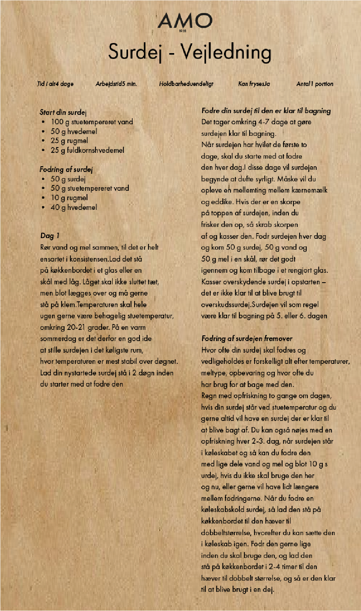

Tidens trends
Surdej
Surdej er en spændende og nem måde at pifte dit hjemmebag op på. Det er ikke tidskrævende at holde en surdej kørende, og det er det hele værd! Man kan både bage udelukkende med surdej eller bruger surdejen som et supplement til gærdej. Det er vigtigt at man også kigger på sin surdej og lærer den at kende.
Flere nye trends

Gullerodsrugbrød

sønderjysk rugbrød